Overview
v0.2A dependency-free parametric reconstruction of the station's main building, generated from six dimensioned architectural drawings (not photographs). Every number below traces back to a printed drawing value or a documented derivation — nothing is guessed silently.
What this page is
A single navigable view over the whole reconstruction: the six source drawings, an orbitable 3D model of the generated geometry, the orthographic renders checked against those drawings, the full parameter table with its confidence tags, and the validation numbers — instead of moving between separate report files.
Why no STEP file
The build environment's network egress blocks PyPI, apt and Homebrew — verified by testing, not assumed — so no BREP kernel (FreeCAD / CadQuery / OpenCASCADE) could be installed. STL, OBJ, 3MF and USD are produced from a small dependency-free mesh kernel instead. Detail in Validation.
Reference drawings
assets/Six sheets from a professional drawing set (German CAD convention: Ansicht = elevation, Grundriss = floor plan, EG/OG = ground/upper floor, Schnitt = section). Click any sheet to enlarge.
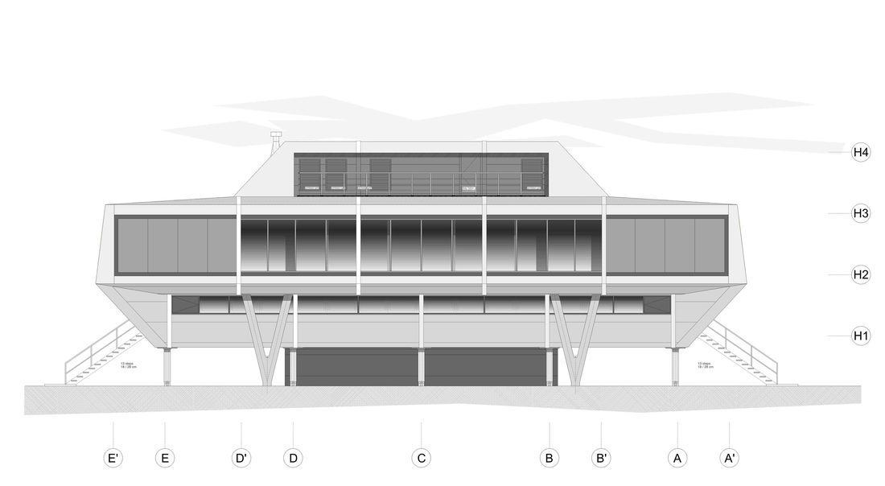
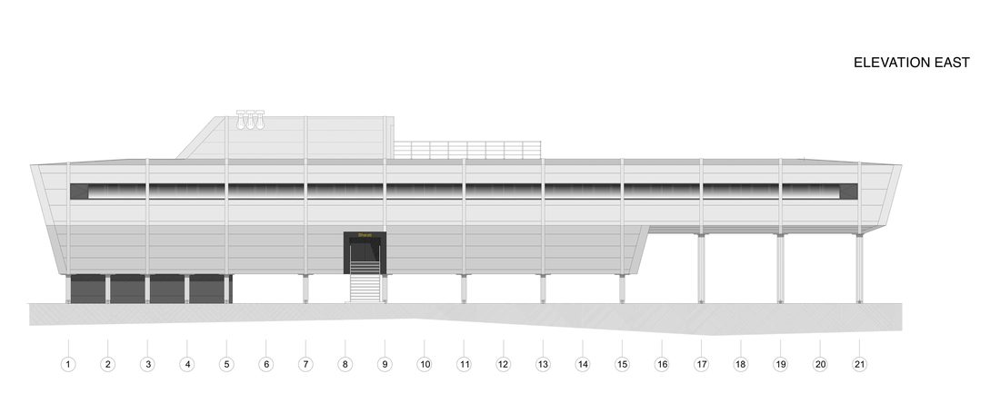
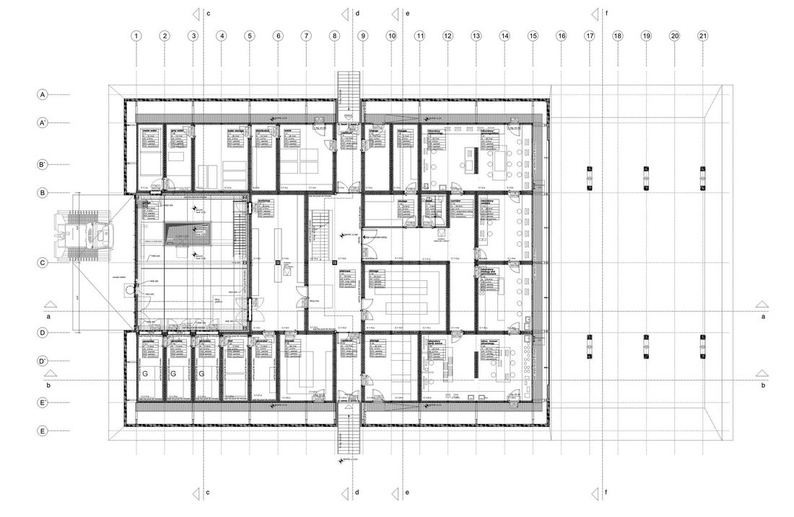
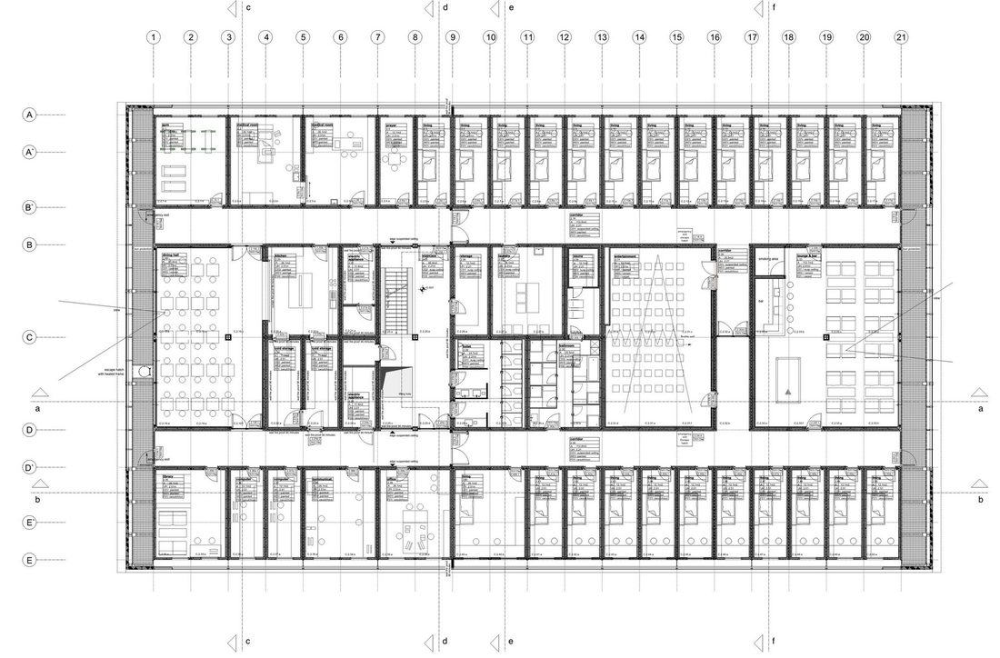
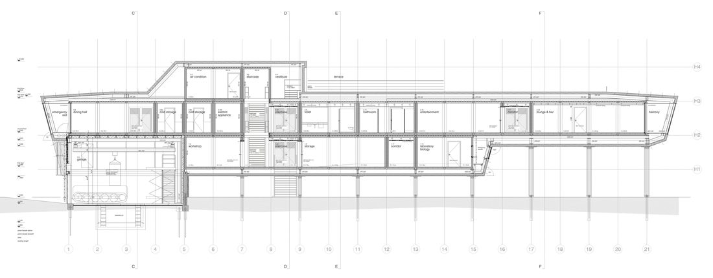
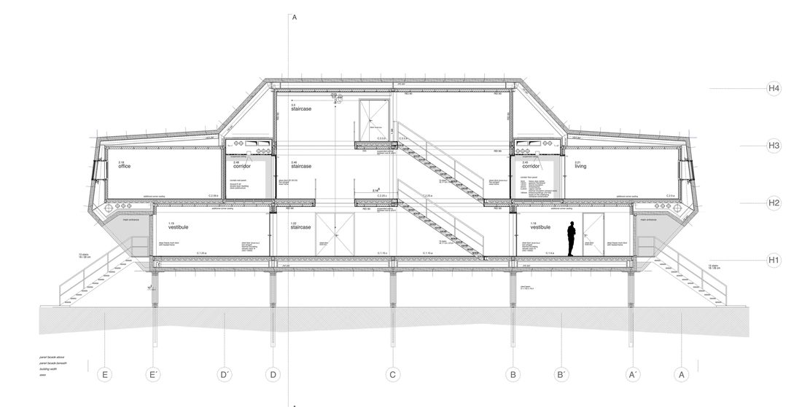
3D model
live · orbitThe actual generated geometry — drag to orbit, scroll to zoom, toggle a system on or off. Colour is by system, not material.
Maitri_Master.stl / .obj / .3mf / .usda — loaded here as raw vertex/index arrays, no conversion.
Multi-view check
renders/Fixed-camera orthographic renders of the model, compared by eye against the source drawings — a real comparison, not an assumed pass. Full write-up in reports/VIEW_VALIDATION.md.
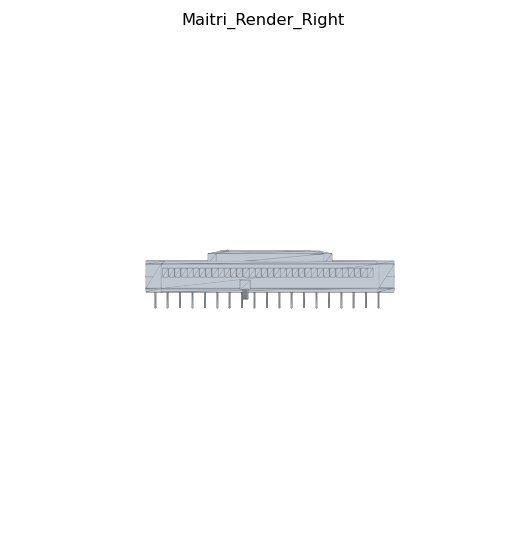
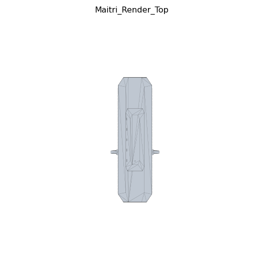
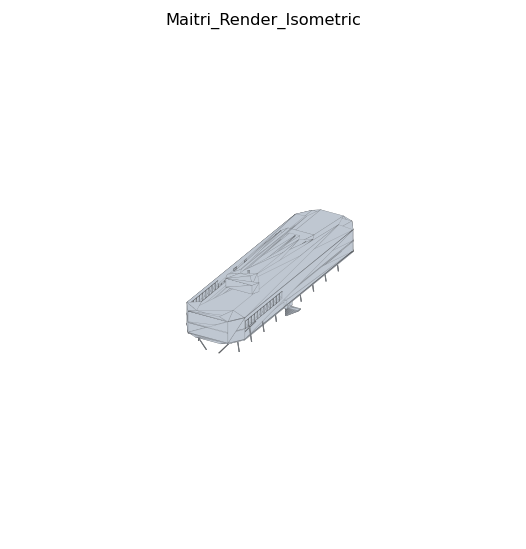
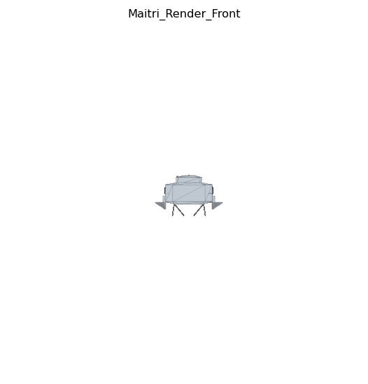
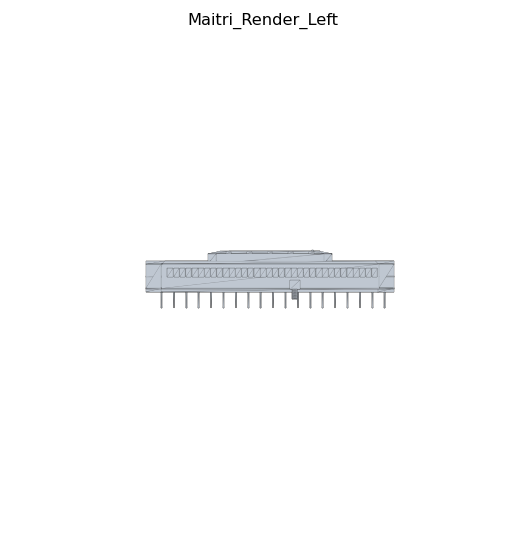
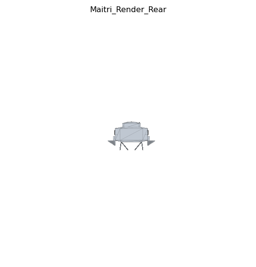
Parameters
45 valuesEvery dimension the generator uses, each tagged by where it came from. VERIFIED = printed on a drawing. DERIVED = computed from verified values. ESTIMATED = a defensible typical value, no printed source.
| Parameter | Value | Unit | Confidence | Source |
|---|---|---|---|---|
| loading… | ||||
Validation
reports/Every part is checked individually: each undirected edge of a closed solid must be used by exactly two triangles, once in each winding direction. No part in this model failed that check.
Printability
At the default 1:100 print scale, 5 of 147 parts fall under the 0.8mm minimum-wall threshold — all are the thin window-frame surface reliefs (0.08m frame depth × 1:100 ≈ 0.8mm), flagged rather than silently thickened. Minimum print detail: 0.4mm.
STEP / IGES export
NOT_GENERATED — no BREP kernel installable in this environment (pip / apt / brew all return 403 at the org proxy, tested directly).
Unblock on a machine with normal internet: pip install cadquery or brew install --cask freecad
Backlog
ralph/TASKS.mdRanked by what actually moves the model forward next — not a full task dump.
Get the outside dimension strings
Building width/length are DERIVED, not VERIFIED — the floor plans' outer dimension chains weren't legible at export resolution. A higher-res export or the source DWG/PDF upgrades the single biggest open value. Needs the project owner; can't be resolved from the current assets.
Part-vs-part intersection check
Only per-part manifoldness is verified today. Two overlapping solids (e.g. a window frame flush against a wall) each pass individually — a real validator gap, not yet a check.
Split into printable modules
Currently exports as one fused mesh. Splitting into ground/body/roof/stilts/entrance with alignment pins is unstarted (implementation.md §19).
Re-check the toolchain periodically
If network egress ever opens up, rebuild the master model on a real BREP kernel and produce the STEP/IGES exports the spec actually asks for as primary.
Output files
output/All in output/ in the project folder on your Mac (and committed to git). This page can't offer them as click-to-download links — browser sandboxing blocks that from an artifact — open them from the folder directly.
| File | Format | Scale | Notes |
|---|---|---|---|
| Maitri_Master.stl | Binary STL | 1:1 (mm) | Full-precision mesh, all parts fused |
| Maitri_Master.obj | Wavefront OBJ | 1:1 (mm) | For quick inspection in any mesh viewer |
| Maitri_Master.3mf | 3MF | 1:1 (m) | Hand-written core spec, one object per part |
| Maitri_Master.usda | USD (ASCII) | 1:1 (m) | Grouped scene graph — same hierarchy as this page's 3D viewer |
| Maitri_Print_1_100.stl | Binary STL | 1:100 (mm) | Print-ready miniature |
| Maitri_Print_1_100.3mf | 3MF | 1:100 (mm) | Print-ready miniature |